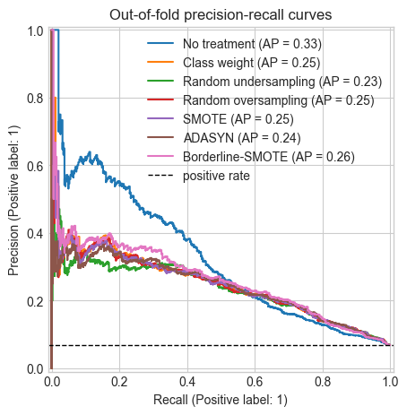
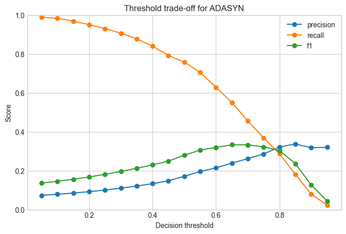

Data Augmentation, SMOTE, and Leakage-Safe Pipelines
DISI — University of Bologna
m.francia@unibo.it
Data Augmentation, SMOTE, and Leakage-Safe Pipelines
Learning outcomes
By the end of this notebook, you should be able to:
- Explain class imbalance and why accuracy can be misleading.
- Distinguish data augmentation from resampling.
- Compare random oversampling, undersampling, SMOTE, ADASYN, and class weighting.
- Place resampling correctly inside a cross-validation pipeline.
- Select appropriate metrics and decision thresholds.
1. The imbalanced classification problem
Many important binary classification problems have one class that is much rarer than the other: fraud detection, medical diagnosis, safety incidents, customer churn, credit default, and equipment failures.
We call the frequent class the majority class and the rare class the minority class. In this notebook the minority class is the positive class: 1.
When classes are imbalanced, accuracy can be misleading. If only 5% of customers churn, a classifier that always predicts “no churn” reaches 95% accuracy while finding no churners at all.
Useful metrics include:
- Precision: among predicted positives, how many were actually positive?
- Recall or sensitivity: among actual positives, how many did we find?
- Specificity: among actual negatives, how many did we correctly reject?
- F1 score: harmonic mean of precision and recall.
- Confusion matrix: counts of true negatives, false positives, false negatives, and true positives.
2. Methods for handling imbalance
Common strategies include:
- No imbalance treatment: train the model directly and evaluate carefully.
- Class-weighted learning: make errors on the minority class more expensive during optimization.
- Random undersampling: remove majority-class examples from the training data.
- Random oversampling: duplicate minority-class examples in the training data.
- SMOTE: create synthetic minority examples by interpolating between minority neighbors in feature space.
- ADASYN: create more synthetic minority examples in regions where the minority class is harder to learn.
- Borderline-SMOTE: focus synthetic examples near the decision boundary.
- SMOTE-NC: a SMOTE variant for data with both numerical and categorical features.
Data augmentation versus SMOTE
Data augmentation usually means applying domain-specific transformations that preserve labels: rotating an image, adding sensor noise, cropping audio, perturbing text, or simulating realistic operating conditions.
SMOTE is different. It creates synthetic rows by interpolation in feature space. ADASYN follows a related idea, but adapts the number of generated samples to local difficulty: minority observations surrounded by many majority-class neighbors receive more synthetic examples.
These methods can help a classifier see a denser minority region, but synthetic samples may be unrealistic when features are constrained, categorical, causal, temporal, or strongly dependent in nonlinear ways.
ADASYN: explanation, usage, and testing
ADASYN stands for Adaptive Synthetic Sampling. Like SMOTE, it creates synthetic minority-class examples using nearest neighbors. Unlike regular SMOTE, it does not distribute synthetic examples evenly across the minority class. It generates more examples around minority observations that are harder to learn, usually because they are surrounded by many majority-class neighbors.
Use ADASYN when the minority class is not only rare, but also unevenly represented: some minority regions are easy and well separated, while others are close to the majority class. It can improve recall in difficult regions, but it may also amplify noise or outliers if the hard examples are mislabeled or anomalous.
Testing ADASYN should follow the same leakage-safe rule as SMOTE:
- Put
ADASYNinside animblearn.pipeline.Pipeline. - Fit it only on training folds during stratified cross-validation.
- Compare it against no treatment, class weighting, random resampling, and SMOTE.
- Inspect precision, recall, F1, confusion matrices, precision-recall curves, and threshold-sensitive costs.
- Check fold variability: a method that wins on average but is unstable may be risky in deployment.
3. How SMOTE variants and ADASYN work
SMOTE
SMOTE, the Synthetic Minority Over-sampling Technique, was introduced by Chawla et al. (Chawla et al. 2002). It creates new minority-class observations instead of simply duplicating existing ones. For a minority observation x_i, SMOTE finds its k nearest minority-class neighbors, randomly selects one neighbor x_j, and creates a synthetic point along the line segment between them:
Intuition: SMOTE fills sparse minority regions in feature space. Main risk: interpolation may create unrealistic records when tabular variables have constraints, categories, strong nonlinear dependencies, or causal relationships.
Borderline-SMOTE
Borderline-SMOTE was proposed by Han, Wang, and Mao (Han et al. 2005). It starts from the observation that not all minority examples are equally useful for resampling. Minority examples deep inside a safe minority region are already easy; examples near the boundary are more informative.
The method first looks at each minority observation and its nearest neighbors from the full dataset. If most nearby points are majority-class observations, the minority point is considered close to the decision boundary. Borderline-SMOTE then generates synthetic examples mainly from these boundary or danger points.
Intuition: focus synthetic data where the classifier is most likely to confuse the classes. Main risk: if boundary points are noisy or mislabeled, the method can reinforce noise.
SMOTE-NC
SMOTE-NC, for nominal and continuous features, is also described by Chawla et al. (Chawla et al. 2002). Plain SMOTE assumes continuous features; applying it after one-hot encoding can create fractional category indicators such as 0.35 for a category. SMOTE-NC avoids this by treating numerical and categorical columns differently.
For numerical features, it interpolates as in SMOTE. For categorical features, it assigns a category using the categories observed among the selected minority example and its nearest neighbors, typically by majority vote. Its distance calculation also accounts for categorical mismatches rather than treating categories as ordinary continuous numbers.
Intuition: keep interpolation for numeric columns while preserving valid category labels. Main risk: generated category combinations can still be implausible if the categorical variables have domain constraints.
ADASYN
ADASYN, Adaptive Synthetic Sampling, was introduced by He et al. (He et al. 2008). Like SMOTE, it creates synthetic minority samples by interpolation. The difference is how it decides where to generate them. ADASYN estimates the local learning difficulty of each minority observation by checking how many majority-class observations appear among its nearest neighbors. Minority examples surrounded by many majority neighbors receive larger sampling weights.
Intuition: adaptively shift attention toward difficult minority regions and reduce the bias caused by class imbalance. Main risk: difficult regions may include outliers, overlap, or label noise, so ADASYN can sometimes generate many samples in exactly the least reliable part of the data.
4. Leakage warning
Resampling is part of model training. It must be learned from the training data only.
Do not apply SMOTE or oversampling before splitting the data. If synthetic points are created before a train/test split, information from validation or test observations can leak into the training set through nearest-neighbor interpolation or duplicated examples.
The same rule applies to cross-validation: resampling must happen inside each training fold, not once globally before cross-validation.
This is why we use imblearn.pipeline.Pipeline whenever the pipeline contains a sampler.
5. Setup
If imbalanced-learn is missing in your environment, install it first with:
Code: Colab dependency setup
Run this cell first in Google Colab. It installs imbalanced-learn only when it is missing.
This setup cell keeps the notebook portable: local environments that already have the package skip installation, while Colab installs the missing dependency.
Code: Imports and settings
The imports separate standard sklearn pipeline pieces from imblearn samplers, which is important because samplers need the imblearn pipeline implementation.
Code
# Keep one seed so every plot and cross-validation split is reproducible in class.
import warnings
import matplotlib.pyplot as plt
import numpy as np
import pandas as pd
from sklearn.base import clone
from sklearn.compose import ColumnTransformer
from sklearn.datasets import make_classification
from sklearn.linear_model import LogisticRegression
from sklearn.metrics import (
ConfusionMatrixDisplay,
PrecisionRecallDisplay,
confusion_matrix,
f1_score,
precision_recall_curve,
accuracy_score,
precision_score,
recall_score,
)
from sklearn.model_selection import StratifiedKFold, train_test_split
from sklearn.pipeline import Pipeline
from sklearn.preprocessing import StandardScaler
from imblearn.over_sampling import ADASYN, BorderlineSMOTE, RandomOverSampler, SMOTE
from imblearn.pipeline import Pipeline as ImbPipeline
from imblearn.under_sampling import RandomUnderSampler
warnings.filterwarnings("ignore", category=FutureWarning)
RANDOM_STATE = 42
plt.style.use("seaborn-v0_8-whitegrid")6. Create a deliberately imbalanced dataset
We will use a synthetic binary classification dataset so the notebook is reproducible without external data downloads.
Think of y=1 as a rare high-risk event, such as fraud, churn, default, or failure.
Code: Generate the dataset
The class weights make the positive class rare but not impossible, so students can observe both false negatives and false positives in later metrics.
Code
# Build a controlled rare-event problem with about 6% positive examples.
X_array, y_array = make_classification(
n_samples=5000,
n_features=12,
n_informative=5,
n_redundant=3,
n_clusters_per_class=2,
weights=[0.94, 0.06],
class_sep=0.9,
flip_y=0.02,
random_state=RANDOM_STATE,
)
feature_names = [f"feature_{i:02d}" for i in range(X_array.shape[1])]
X = pd.DataFrame(X_array, columns=feature_names)
y = pd.Series(y_array, name="high_risk")
class_counts = y.value_counts().sort_index()
class_rates = y.value_counts(normalize=True).sort_index()
pd.DataFrame({"count": class_counts, "rate": class_rates.round(3)})| count | rate | |
|---|---|---|
| high_risk | ||
| 0 | 4658 | 0.932 |
| 1 | 342 | 0.068 |
Code: Plot class balance
Start with the base rate. Every later metric should be interpreted relative to this imbalance.
Code
# Visualize the base rate before discussing any model metrics.
fig, ax = plt.subplots(figsize=(5, 3))
class_counts.plot(kind="bar", ax=ax, color=["#4C78A8", "#F58518"])
ax.set_title("Class distribution")
ax.set_xlabel("Class")
ax.set_ylabel("Number of observations")
ax.set_xticklabels(["0: majority", "1: minority"], rotation=0)
plt.show()
7. Why accuracy fails
A classifier that always predicts the majority class can look strong by accuracy alone. But it has zero recall for the minority class.
Code: Majority-class baseline
This deliberately weak baseline is useful because it exposes why accuracy alone is not a sufficient objective.
Code
# Predicting only the majority class gives high accuracy but no minority recall.
always_majority = np.zeros_like(y)
accuracy = (always_majority == y).mean()
precision = precision_score(y, always_majority, zero_division=0)
recall = recall_score(y, always_majority, zero_division=0)
f1 = f1_score(y, always_majority, zero_division=0)
pd.DataFrame(
[{"accuracy": accuracy, "precision": precision, "recall": recall, "f1": f1}]
).round(3)| accuracy | precision | recall | f1 | |
|---|---|---|---|---|
| 0 | 0.932 | 0.0 | 0.0 | 0.0 |
8. Visual intuition: what resampling changes
Before using resampling inside full pipelines, let us inspect what each technique does on a small 2D imbalanced dataset.
The goal is not to build the best model on two features. The goal is to see how the training set changes.
- Random undersampling removes majority-class observations. It can make training faster and rebalance the data, but it may throw away useful information.
- Random oversampling duplicates minority-class observations. It balances the class counts, but it does not create new minority geometry.
- SMOTE interpolates between minority-class neighbors, spreading synthetic samples through minority regions.
- Borderline-SMOTE focuses on minority observations near the class boundary, where mistakes are more likely.
- ADASYN adapts to local difficulty, generating more synthetic examples where minority observations are surrounded by majority-class neighbors.
Class weighting is not shown in these plots because it does not create, duplicate, or remove rows. It changes the learning objective of the classifier.
Code: Build a 2D imbalanced dataset
The 2D dataset is only for visualization. The full experiment later uses all features and cross-validation.
Code
# Create a small two-feature dataset so synthetic samples can be plotted directly.
X_2d_array, y_2d_array = make_classification(
n_samples=350,
n_features=2,
n_informative=2,
n_redundant=0,
n_clusters_per_class=1,
weights=[0.9, 0.1],
class_sep=0.85,
flip_y=0.03,
random_state=RANDOM_STATE,
)
X_2d = pd.DataFrame(X_2d_array, columns=["x1", "x2"])
y_2d = pd.Series(y_2d_array, name="minority_class")
pd.DataFrame({"count": y_2d.value_counts().sort_index()})| count | |
|---|---|
| minority_class | |
| 0 | 311 |
| 1 | 39 |
Code: Plot resampling effects in feature space
Each panel shows the training data after one resampling strategy. The validation data is not involved in this illustration.
Code
# Apply each sampler to the same toy data and plot the resulting training geometry.
toy_samplers = {
"Original data": None,
"Random undersampling": RandomUnderSampler(random_state=RANDOM_STATE),
"Random oversampling": RandomOverSampler(random_state=RANDOM_STATE),
"SMOTE": SMOTE(random_state=RANDOM_STATE, k_neighbors=5),
"Borderline-SMOTE": BorderlineSMOTE(random_state=RANDOM_STATE, k_neighbors=5),
"ADASYN": ADASYN(random_state=RANDOM_STATE, n_neighbors=5),
}
def apply_sampler_for_plot(sampler, X, y):
if sampler is None:
X_resampled = X.copy()
y_resampled = y.copy()
else:
X_values, y_values = sampler.fit_resample(X, y)
X_resampled = pd.DataFrame(X_values, columns=X.columns)
y_resampled = pd.Series(y_values, name=y.name)
original_mask = np.arange(len(X_resampled)) < len(X)
return X_resampled, y_resampled, original_mask
def plot_resampled_dataset(ax, title, X_resampled, y_resampled, original_mask):
majority = y_resampled == 0
minority = y_resampled == 1
synthetic = ~original_mask
ax.scatter(
X_resampled.loc[majority, "x1"],
X_resampled.loc[majority, "x2"],
s=22,
alpha=0.35,
label="majority",
color="#4C78A8",
)
ax.scatter(
X_resampled.loc[minority & original_mask, "x1"],
X_resampled.loc[minority & original_mask, "x2"],
s=32,
alpha=0.85,
label="original minority",
color="#F58518",
edgecolor="black",
linewidth=0.3,
)
ax.scatter(
X_resampled.loc[synthetic, "x1"],
X_resampled.loc[synthetic, "x2"],
s=38,
alpha=0.85,
label="new or duplicated",
color="#E45756",
marker="x",
)
counts = y_resampled.value_counts().sort_index()
ax.set_title(f"{title}\nclass 0: {counts.get(0, 0)}, class 1: {counts.get(1, 0)}")
ax.set_xlabel("x1")
ax.set_ylabel("x2")
fig, axes = plt.subplots(2, 3, figsize=(14, 8), sharex=True, sharey=True)
for ax, (name, sampler) in zip(axes.ravel(), toy_samplers.items()):
X_resampled, y_resampled, original_mask = apply_sampler_for_plot(sampler, X_2d, y_2d)
plot_resampled_dataset(ax, name, X_resampled, y_resampled, original_mask)
handles, labels = axes[0, 0].get_legend_handles_labels()
fig.legend(handles, labels, loc="lower center", ncol=3)
fig.suptitle("How resampling changes a 2D training set", y=1.02, fontsize=16)
plt.tight_layout(rect=[0, 0.05, 1, 1])
plt.show()
Reading the visual comparison
The plots show why these techniques are not interchangeable.
- Random oversampling increases the minority count by repeating existing observations, so the red crosses sit directly on top of known minority points.
- SMOTE fills line segments between nearby minority points. This can smooth sparse minority regions, but it assumes that interpolation produces valid records.
- Borderline-SMOTE tries to synthesize near the frontier between classes. It is useful when boundary recall matters, but it can be sensitive to overlap and label noise.
- ADASYN places more synthetic examples in locally difficult regions. Compared with SMOTE, it often concentrates more strongly near areas where the majority class surrounds the minority class.
The visual lesson carries over to tabular data: synthetic rows are helpful only if the generated feature combinations are plausible for the domain.
9. Baseline pipeline
A conventional sklearn.pipeline.Pipeline is sufficient when all steps are transformers and estimators.
When we add a sampler such as SMOTE, random oversampling, or undersampling, we switch to imblearn.pipeline.Pipeline.
Code: Build the baseline pipeline
The baseline establishes the ordinary preprocessing-and-classifier structure before samplers are introduced.
Code
# Standardize numeric features before logistic regression.
numeric_features = X.columns.tolist()
preprocessor = ColumnTransformer(
transformers=[("num", StandardScaler(), numeric_features)],
remainder="drop",
)
baseline_pipeline = Pipeline(
steps=[
("preprocessing", preprocessor),
("classifier", LogisticRegression(max_iter=2000, random_state=RANDOM_STATE)),
]
)
baseline_pipelinePipeline(steps=[('preprocessing',
ColumnTransformer(transformers=[('num', StandardScaler(),
['feature_00', 'feature_01',
'feature_02', 'feature_03',
'feature_04', 'feature_05',
'feature_06', 'feature_07',
'feature_08', 'feature_09',
'feature_10',
'feature_11'])])),
('classifier',
LogisticRegression(max_iter=2000, random_state=42))])In a Jupyter environment, please rerun this cell to show the HTML representation or trust the notebook. On GitHub, the HTML representation is unable to render, please try loading this page with nbviewer.org.
Parameters
Parameters
['feature_00', 'feature_01', 'feature_02', 'feature_03', 'feature_04', 'feature_05', 'feature_06', 'feature_07', 'feature_08', 'feature_09', 'feature_10', 'feature_11']
Parameters
Parameters
10. Candidate pipelines
We compare seven strategies:
- No imbalance treatment.
class_weight="balanced".- Random undersampling.
- Random oversampling.
- SMOTE.
- ADASYN.
- Borderline-SMOTE.
All samplers are placed after preprocessing and before the classifier, so they are fitted only on the current training fold.
Code: Define candidate pipelines
The sampler position is the key idea: preprocessing first, resampling second, classifier last.
Code
# Compare ordinary sklearn pipelines with imblearn pipelines that can contain samplers.
def logistic_regression(class_weight=None):
return LogisticRegression(
max_iter=2000,
class_weight=class_weight,
random_state=RANDOM_STATE,
)
pipelines = {
"No treatment": Pipeline(
[("preprocessing", preprocessor), ("classifier", logistic_regression())]
),
"Class weight": Pipeline(
[
("preprocessing", preprocessor),
("classifier", logistic_regression(class_weight="balanced")),
]
),
"Random undersampling": ImbPipeline(
[
("preprocessing", preprocessor),
("sampler", RandomUnderSampler(random_state=RANDOM_STATE)),
("classifier", logistic_regression()),
]
),
"Random oversampling": ImbPipeline(
[
("preprocessing", preprocessor),
("sampler", RandomOverSampler(random_state=RANDOM_STATE)),
("classifier", logistic_regression()),
]
),
"SMOTE": ImbPipeline(
[
("preprocessing", preprocessor),
("sampler", SMOTE(random_state=RANDOM_STATE, k_neighbors=5)),
("classifier", logistic_regression()),
]
),
"ADASYN": ImbPipeline(
[
("preprocessing", preprocessor),
("sampler", ADASYN(random_state=RANDOM_STATE, n_neighbors=5)),
("classifier", logistic_regression()),
]
),
"Borderline-SMOTE": ImbPipeline(
[
("preprocessing", preprocessor),
("sampler", BorderlineSMOTE(random_state=RANDOM_STATE, k_neighbors=5)),
("classifier", logistic_regression()),
]
),
}
list(pipelines)['No treatment',
'Class weight',
'Random undersampling',
'Random oversampling',
'SMOTE',
'ADASYN',
'Borderline-SMOTE']11. Stratified cross-validation
The helper below manually loops over stratified folds. This makes it explicit that every pipeline is cloned, fitted on the training fold, and evaluated on the untouched validation fold.
Code: Run stratified cross-validation
The explicit loop makes leakage checks visible: every fold gets a fresh clone of the pipeline.
Code
# Fit a fresh pipeline in each fold so preprocessing and sampling never see validation rows.
def specificity_score(y_true, y_pred):
tn, fp, fn, tp = confusion_matrix(y_true, y_pred, labels=[0, 1]).ravel()
return tn / (tn + fp) if (tn + fp) else np.nan
def evaluate_pipeline(name, pipeline, X, y, cv, threshold=0.5):
fold_rows = []
out_of_fold_scores = pd.Series(index=y.index, dtype=float)
for fold, (train_idx, valid_idx) in enumerate(cv.split(X, y), start=1):
model = clone(pipeline)
X_train, X_valid = X.iloc[train_idx], X.iloc[valid_idx]
y_train, y_valid = y.iloc[train_idx], y.iloc[valid_idx]
model.fit(X_train, y_train)
y_score = model.predict_proba(X_valid)[:, 1]
y_pred = (y_score >= threshold).astype(int)
out_of_fold_scores.iloc[valid_idx] = y_score
fold_rows.append(
{
"method": name,
"fold": fold,
"accuracy": accuracy_score(y_valid, y_pred),
"precision": precision_score(y_valid, y_pred, zero_division=0),
"recall": recall_score(y_valid, y_pred, zero_division=0),
"specificity": specificity_score(y_valid, y_pred),
"f1": f1_score(y_valid, y_pred, zero_division=0),
}
)
return pd.DataFrame(fold_rows), out_of_fold_scores
cv = StratifiedKFold(n_splits=5, shuffle=True, random_state=RANDOM_STATE)
fold_results = []
oof_scores = {}
for name, pipeline in pipelines.items():
fold_df, scores = evaluate_pipeline(name, pipeline, X, y, cv)
fold_results.append(fold_df)
oof_scores[name] = scores
fold_results = pd.concat(fold_results, ignore_index=True)12. Comparison table
The table reports mean cross-validation performance and fold-to-fold variability.
Code: Summarize average performance
Compare recall and specificity together. Higher minority recall often comes with more majority false positives.
Code
# Average fold-level metrics to compare strategies at the default 0.5 threshold.
summary = (
fold_results.groupby("method")
.agg(
Accuracy=("accuracy", "mean"),
Precision=("precision", "mean"),
Recall=("recall", "mean"),
Specificity=("specificity", "mean"),
F1=("f1", "mean"),
F1_std=("f1", "std"),
)
.sort_values("F1", ascending=False)
)
summary.round(3)| Accuracy | Precision | Recall | Specificity | F1 | F1_std | |
|---|---|---|---|---|---|---|
| method | ||||||
| Borderline-SMOTE | 0.773 | 0.192 | 0.719 | 0.777 | 0.303 | 0.017 |
| SMOTE | 0.734 | 0.172 | 0.754 | 0.733 | 0.281 | 0.021 |
| ADASYN | 0.732 | 0.172 | 0.757 | 0.730 | 0.279 | 0.017 |
| Class weight | 0.725 | 0.168 | 0.757 | 0.723 | 0.275 | 0.022 |
| Random oversampling | 0.726 | 0.167 | 0.751 | 0.724 | 0.274 | 0.022 |
| Random undersampling | 0.714 | 0.163 | 0.760 | 0.711 | 0.268 | 0.017 |
| No treatment | 0.932 | 0.552 | 0.050 | 0.997 | 0.091 | 0.040 |
Code: Inspect fold variability
Fold variability helps distinguish a consistently useful method from a lucky average.
Code
| method | ADASYN | Borderline-SMOTE | Class weight | No treatment | Random oversampling | Random undersampling | SMOTE |
|---|---|---|---|---|---|---|---|
| fold | |||||||
| 1 | 0.258 | 0.287 | 0.247 | 0.080 | 0.245 | 0.257 | 0.253 |
| 2 | 0.272 | 0.296 | 0.259 | 0.135 | 0.259 | 0.249 | 0.268 |
| 3 | 0.285 | 0.295 | 0.280 | 0.028 | 0.281 | 0.275 | 0.285 |
| 4 | 0.278 | 0.307 | 0.285 | 0.107 | 0.280 | 0.266 | 0.290 |
| 5 | 0.305 | 0.330 | 0.302 | 0.104 | 0.303 | 0.292 | 0.308 |
13. Confusion matrices
Here we use out-of-fold predictions. Each observation is predicted by a model that did not train on it.
Code: Plot confusion matrices
Confusion matrices convert abstract metric changes into counts of mistakes.
Code
# Convert out-of-fold probabilities into labels before drawing confusion matrices.
n_methods = len(oof_scores)
n_cols = 3
n_rows = int(np.ceil(n_methods / n_cols))
fig, axes = plt.subplots(n_rows, n_cols, figsize=(12, 3.5 * n_rows))
axes = np.asarray(axes).ravel()
for ax in axes[n_methods:]:
ax.axis("off")
for ax, (name, scores) in zip(axes, oof_scores.items()):
y_pred = (scores >= 0.5).astype(int)
ConfusionMatrixDisplay.from_predictions(
y,
y_pred,
labels=[0, 1],
display_labels=["majority", "minority"],
cmap="Blues",
colorbar=False,
ax=ax,
)
ax.set_title(name)
plt.tight_layout()
plt.show()
14. Precision-recall curves
A precision-recall curve shows how precision and recall change as we vary the classification threshold.
Most probabilistic classifiers first produce a score such as:
To turn that score into a class label, we choose a threshold. With the default threshold 0.5, observations with score at least 0.5 are predicted as positive and the rest as negative.
The precision-recall curve evaluates many possible thresholds:
- Moving the threshold down predicts more positives. Recall usually increases because we catch more true positives, but precision often decreases because we also include more false positives.
- Moving the threshold up predicts fewer positives. Precision may increase because we are more selective, but recall often decreases because we miss more true positives.
For imbalanced data, precision-recall curves are often more informative than ROC curves because they focus directly on performance for the rare positive class. The horizontal baseline is the positive-class rate: a useful model should usually operate above that line.
Code: Plot precision-recall curves
These curves use out-of-fold scores, so every score comes from a model that did not train on that row.
Code
# Plot precision-recall curves from validation-only scores for each method.
fig, ax = plt.subplots(figsize=(8, 5))
for name, scores in oof_scores.items():
PrecisionRecallDisplay.from_predictions(y, scores, name=name, ax=ax)
positive_rate = y.mean()
ax.axhline(positive_rate, color="black", linestyle="--", linewidth=1, label="positive rate")
ax.set_title("Out-of-fold precision-recall curves")
ax.legend(loc="best")
plt.show()
15. Threshold adjustment
predict usually applies a threshold of 0.5. That threshold is not sacred: it is a decision rule, not a property of the model.
Changing the threshold changes the confusion matrix:
- A lower threshold produces more positive predictions. This usually reduces false negatives and increases recall, but it can increase false positives and lower precision.
- A higher threshold produces fewer positive predictions. This can reduce false positives and improve precision, but it can increase false negatives and lower recall.
In a high-cost false-negative scenario, such as fraud detection, medical screening, safety monitoring, or loan-default risk, we may prefer a lower threshold. The model will raise more alarms, but it misses fewer rare positive cases.
The right threshold depends on the operational cost of each error type. That is why threshold tuning should be evaluated with validation data, business constraints, and the metric that matches the real decision problem.
Code: Evaluate thresholds
Thresholds turn probabilities into decisions. This table lets students choose a decision rule for a stated cost.
Code
# Recompute metrics over a grid of decision thresholds for one selected method.
def metrics_at_thresholds(y_true, y_score, thresholds):
rows = []
for threshold in thresholds:
y_pred = (y_score >= threshold).astype(int)
rows.append(
{
"threshold": threshold,
"precision": precision_score(y_true, y_pred, zero_division=0),
"recall": recall_score(y_true, y_pred, zero_division=0),
"specificity": specificity_score(y_true, y_pred),
"f1": f1_score(y_true, y_pred, zero_division=0),
}
)
return pd.DataFrame(rows)
selected_method = "ADASYN"
threshold_grid = np.linspace(0.05, 0.95, 19)
threshold_results = metrics_at_thresholds(y, oof_scores[selected_method], threshold_grid)
threshold_results.round(3)| threshold | precision | recall | specificity | f1 | |
|---|---|---|---|---|---|
| 0 | 0.05 | 0.073 | 0.988 | 0.075 | 0.136 |
| 1 | 0.10 | 0.079 | 0.982 | 0.153 | 0.145 |
| 2 | 0.15 | 0.085 | 0.968 | 0.231 | 0.156 |
| 3 | 0.20 | 0.092 | 0.950 | 0.310 | 0.167 |
| 4 | 0.25 | 0.100 | 0.930 | 0.387 | 0.181 |
| 5 | 0.30 | 0.110 | 0.906 | 0.460 | 0.196 |
| 6 | 0.35 | 0.121 | 0.877 | 0.530 | 0.212 |
| 7 | 0.40 | 0.133 | 0.839 | 0.598 | 0.229 |
| 8 | 0.45 | 0.148 | 0.792 | 0.664 | 0.249 |
| 9 | 0.50 | 0.171 | 0.757 | 0.730 | 0.279 |
| 10 | 0.55 | 0.195 | 0.705 | 0.787 | 0.306 |
| 11 | 0.60 | 0.214 | 0.629 | 0.830 | 0.319 |
| 12 | 0.65 | 0.239 | 0.550 | 0.871 | 0.333 |
| 13 | 0.70 | 0.262 | 0.456 | 0.906 | 0.333 |
| 14 | 0.75 | 0.286 | 0.368 | 0.932 | 0.322 |
| 15 | 0.80 | 0.321 | 0.287 | 0.956 | 0.303 |
| 16 | 0.85 | 0.337 | 0.181 | 0.974 | 0.236 |
| 17 | 0.90 | 0.318 | 0.079 | 0.988 | 0.126 |
| 18 | 0.95 | 0.320 | 0.023 | 0.996 | 0.044 |
Code: Plot the threshold trade-off
The plot makes the precision-recall trade-off easier to discuss than the table alone.
Code
# Plot the metric trade-off created by moving the classification threshold.
fig, ax = plt.subplots(figsize=(8, 5))
ax.plot(threshold_results["threshold"], threshold_results["precision"], marker="o", label="precision")
ax.plot(threshold_results["threshold"], threshold_results["recall"], marker="o", label="recall")
ax.plot(threshold_results["threshold"], threshold_results["f1"], marker="o", label="f1")
ax.set_title(f"Threshold trade-off for {selected_method}")
ax.set_xlabel("Decision threshold")
ax.set_ylabel("Score")
ax.set_ylim(0, 1)
ax.legend()
plt.show()
16. Choose a threshold for high-cost false negatives
Suppose a false negative costs 10 times as much as a false positive.
This is a simple teaching cost model, not a universal decision rule. In a real application, you would estimate costs with domain experts and validate the downstream effects.
Code: Minimize threshold-sensitive cost
The cost model is intentionally simple; its purpose is to connect metrics to operational consequences.
Code
# Search thresholds with a simple cost function where false negatives are expensive.
def cost_at_threshold(y_true, y_score, threshold, false_positive_cost=1, false_negative_cost=10):
y_pred = (y_score >= threshold).astype(int)
tn, fp, fn, tp = confusion_matrix(y_true, y_pred, labels=[0, 1]).ravel()
total_cost = fp * false_positive_cost + fn * false_negative_cost
return {
"threshold": threshold,
"false_positives": fp,
"false_negatives": fn,
"total_cost": total_cost,
"precision": precision_score(y_true, y_pred, zero_division=0),
"recall": recall_score(y_true, y_pred, zero_division=0),
"f1": f1_score(y_true, y_pred, zero_division=0),
}
cost_rows = []
for method, scores in oof_scores.items():
for threshold in np.linspace(0.05, 0.95, 91):
row = cost_at_threshold(y, scores, threshold)
row["method"] = method
cost_rows.append(row)
cost_results = pd.DataFrame(cost_rows)
best_by_method = cost_results.loc[cost_results.groupby("method")["total_cost"].idxmin()]
best_by_method.sort_values("total_cost").round(3)| threshold | false_positives | false_negatives | total_cost | precision | recall | f1 | method | |
|---|---|---|---|---|---|---|---|---|
| 593 | 0.52 | 961 | 101 | 1971 | 0.200 | 0.705 | 0.312 | Borderline-SMOTE |
| 505 | 0.55 | 993 | 101 | 2003 | 0.195 | 0.705 | 0.306 | ADASYN |
| 328 | 0.60 | 795 | 123 | 2025 | 0.216 | 0.640 | 0.323 | Random oversampling |
| 231 | 0.54 | 1126 | 90 | 2026 | 0.183 | 0.737 | 0.293 | Random undersampling |
| 140 | 0.54 | 1068 | 96 | 2028 | 0.187 | 0.719 | 0.297 | Class weight |
| 415 | 0.56 | 959 | 107 | 2029 | 0.197 | 0.687 | 0.306 | SMOTE |
| 6 | 0.11 | 694 | 143 | 2124 | 0.223 | 0.582 | 0.322 | No treatment |
17. Leakage demonstration
The following example shows the wrong and right structure.
The wrong structure applies SMOTE before cross-validation. The validation folds are no longer clean because the synthetic data was produced using information from the full dataset.
The right structure places SMOTE inside an imblearn pipeline, so SMOTE is fitted only on each training fold.
Code: Show a leakage pattern
This cell is intentionally unsafe first, then safe. Keep both results visible for the leakage discussion.
Code
# Contrast an intentionally leaky workflow with the leakage-safe pipeline workflow.
# Wrong pattern for teaching purposes only: do not use this as an evaluation design.
X_scaled = preprocessor.fit_transform(X)
X_leaky, y_leaky = SMOTE(random_state=RANDOM_STATE).fit_resample(X_scaled, y)
leaky_pipeline = Pipeline(
[("classifier", logistic_regression())]
)
leaky_fold_results, _ = evaluate_pipeline(
"Leaky SMOTE before CV",
leaky_pipeline,
pd.DataFrame(X_leaky),
pd.Series(y_leaky),
cv,
)
right_fold_results, _ = evaluate_pipeline("SMOTE inside CV", pipelines["SMOTE"], X, y, cv)
pd.concat([leaky_fold_results, right_fold_results])\
.groupby("method")[["accuracy", "precision", "recall", "specificity", "f1"]]\
.mean()\
.round(3)| accuracy | precision | recall | specificity | f1 | |
|---|---|---|---|---|---|
| method | |||||
| Leaky SMOTE before CV | 0.758 | 0.746 | 0.782 | 0.733 | 0.763 |
| SMOTE inside CV | 0.734 | 0.172 | 0.754 | 0.733 | 0.281 |
18. SMOTE-NC for mixed tabular data
SMOTENC is useful when a dataset mixes numerical and categorical predictors. It implements the SMOTE-NC idea from Chawla et al. (Chawla et al. 2002): interpolate numerical columns, but choose categorical values from neighboring minority examples instead of interpolating category codes.
The categorical feature indices must refer to the feature matrix seen by the sampler. This detail matters when preprocessing changes the column order. In many pipelines, it is safer to apply SMOTENC before one-hot encoding, or to use a preprocessing design that keeps categorical columns identifiable at the sampler step.
A typical approach is:
from imblearn.over_sampling import SMOTENC
pipeline = ImbPipeline([
("preprocessing", preprocessor_that_keeps_categorical_columns_encoded_as_categories),
("sampler", SMOTENC(categorical_features=[...], random_state=42)),
("classifier", classifier),
])Be careful with one-hot encoding before plain SMOTE: interpolation can produce fractional category indicators. SMOTENC is designed to avoid that issue, but it still cannot guarantee that every generated row is realistic for the application domain.
19. Student challenge
Choose a pipeline for a high-cost false-negative scenario.
Your task:
- Define the business or social cost of a false negative.
- Select a primary metric.
- Compare at least three imbalance strategies.
- Tune the classification threshold.
- Defend your final choice using evidence from the tables and plots above.
Suggested framing: in a fraud-screening system, a false negative means a fraudulent transaction is accepted; a false positive means a legitimate transaction is manually reviewed.
Suitable public datasets
You may use one of these public datasets, or propose another dataset with a clear minority class and a meaningful error-cost story:
- Credit Card Fraud Detection on Kaggle: real anonymized European card transactions, with fraud as a very rare positive class. This is the strongest fit for a high-cost false-negative discussion.
- Default of Credit Card Clients on UCI: credit default prediction with customer billing and repayment history. Good for discussing financial risk, class weighting, and threshold choice.
- Bank Marketing on UCI: predict whether a client subscribes to a term deposit. Useful for a moderate imbalance setting where false positives and false negatives have different campaign costs.
- Credit Approval on UCI: credit-card application classification with mixed categorical and continuous attributes. Good for discussing SMOTE-NC and preprocessing choices.
- Telco Customer Churn on Kaggle: customer churn prediction with categorical and numerical features. Good for retention-cost scenarios and threshold tuning.
For the challenge, avoid optimizing only accuracy. Pick a metric such as recall, F1, F-beta, average precision, or expected cost, then explain why it matches the scenario.
References for imbalance methods
The BibTeX entries for the citation keys below are available in refs/refs.bib.
- SMOTE and SMOTE-NC: Chawla et al. (Chawla et al. 2002).
- Borderline-SMOTE: Han, Wang, and Mao (Han et al. 2005).
- ADASYN: He et al. (He et al. 2008).
Important takeaway
Resampling is part of model training, so it belongs inside the pipeline and inside cross-validation.